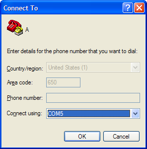

Streaming Live Data with the Nokia SU-1B
The streaming functionality is not part of the Anoto SDK. It is enabled via a firmware upgrade. If you need this firmware upgrade, please speak with your Nokia representative. The rest of this tutorial assumes you have acquired the streaming firmware.
- First, let's upgrade our pen's firmware. Remember how we looked up the firmware version in an earlier tutorial?
- We need to "upgrade" our firmware to 16C_Streaming.

- First, run KillPCSW.exe. The little Nokia icon in your System Tray disappears.
- Now, run the 7610...UpgradeUtil.exe. If Windows Firewall asks you to unblock, do so.
- The UpgradeUtil's Status should read: "Pen Connected." Click Upgrade. Navigate to the folder where you have all the BIN Files (usually the same folder where the UpgradeUtil resides).

- When the upgrade finishes, we'll need to restart Windows. =)
- ...go get coffee...
- Windows has restarted, and you see the Nokia dock icon again. Examine the firmware revision, and you will see that it says 16C_STREAMING_2. Your pen is now ready to stream.
However, your computer is not yet ready to talk to your pen. You will need a bluetooth dongle (or built in bluetooth) to do this. The basic requirement is that your computer needs Bluetooth, and a Bluetooth service named "ANOTO STREAMING" (note the space) that is mapped to a COM port (our software will by default look for it on COM5; this is customizable). If you feel brave enough to go at this alone, good luck. In my experience, connecting over Bluetooth is a big pain. Also, we have not been able to do this with Mac OS X (with enough massaging, we can get it to work through Parallels). Let me know how it goes, if you're a Mac fan.
On Windows, we have had the best experience with Widcomm's Bluetooth stack. You may try other stacks, but in our testing, they generally do not work.
If you would like to stream exactly the same way we do, please read on...
- Go to your nearest computer store and buy the Zoom USB Bluetooth Adapter, Model 4320 (A or AF also work). In the past, we have had success finding this model at Fry's Electronics. The adapter and the box look like this:


- Do not install the driver that came with the box. =) In earlier versions of the box, the disk came with the Widcomm stack. They have since moved to a different (presumably cheaper-to-license) BT stack. You will need to find a copy of the Widcomm BT Software version 5 (we use 5.0.1.801). If you can find another Bluetooth Adapter that comes with the Widcomm 5 stack, let us know. In our sampling, most of the adapters we bought came with non-Widcomm stacks.
- Install the Widcomm 5 BT Software (by running setup.exe). It may notify you that this software has not passed a Microsoft Certification. Please click OK. If it asks you several more times, please click OK until it lets you through. At some point during the installation, it will ask you to plug in your Bluetooth adapter. Do so. After you install the software (and reboot), you should see a white Bluetooth icon in the system tray. If you ever unplug your adapter, you will see a red icon.


- Make sure your Bluetooth adapter is plugged in and the icon is white. Double-click this icon to open the My Bluetooth Places window.
- Click on "View or modify configuration". Navigate to the "Local Services" tab.
- Click "Add Serial Service" and enter "ANOTO STREAMING" as the name, and have it start up automatically. Set it to COM5. If COM5 isn't available, choose the next available one. But, if you can, uninstall whatever is hogging up COM5. It makes things a little bit easier later on. If you have a lot of devices that are hogging up your COM ports, and you'd like to remove them, see this link (a mirror in case DLink removes that page).

- Next, you will need to pair your pen to your computer. This is always a fun process. I always unplug the AC adapter, and put the cap on the Nokia pen (thus turning it off) before I try to pair the pen to my PC. If you leave it charging, sometimes it will not pair. Trust me on this one.
- Double-Click on your Bluetooth tray icon, and you will see this window:

- Click "Search for devices in range" and uncap your pen at the same time. If you get lucky, you will see a new Nokia device appear.

- Right-Click the device, and choose Pair.
- Enter your Bluetooth Passkey here. It is the last 4 digits of the serial number printed on the back of your pen (e.g., 7235).

- When the pen connects, the pen will buzz three times. You will see a red check mark next to the device. Your pen is now paired to your PC.

Allllmossssssssst Therrre...
Your pen is paired, but your pen will not start sending any data until you tell it to go into Streaming Mode.
- Remember the folder where you stored KillPCSW.exe and the rest of the firmware upgrade files? Go back to that folder, and find the Postscript file named streaming_onoff.eps. Send this to your nearest printer using Ghostscript or lpr. In my experience, it works best with a color printer. This postscript file contains a page of paper "buttons" that tell your pen to start communicating with your computer over Bluetooth. In my experience, I use this button so often that I have taped it to my laptop.

- Uncap your pen and tap the blue square with the tip of your pen. If it asks you to unblock a port, agree. A bubble might also pop up asking if it's ok to connect to this device. Agree, and check the "always allow" option. If all goes well, your pen is now streaming. You can tell because the power icon on your pen is blinking like mad.
- Also, when in streaming mode, your bluetooth icon turns green. You can tap the streaming on/off button to turn off streaming. When debugging, I sometimes keep the AC adapter plugged in, so it will never run out of batteries. Note: turning the streaming on and off might not work as well if the AC adapter is plugged in. I tend to unplug, turn on streaming, and replug.
- One question you may be asking is: "How do I see that data is actually getting transferred?"
Run HyperTerminal (under Accessories > Communications). Create a new profile and pick any icon.

- Connect to COM5. Hit OK (leave the connections settings at their defaults).
- Now, turn streaming on. Pick up your favorite Anoto notebook and write on it. You should see data streaming in real time in the HyperTerminal.

Now doesn't that data look beautiful? To really get raw data from the pen, you'll have to study the data format in the PDF document provided with the streaming driver. If you don't want to write your own app to read from the serial port, forge on to the next tutorial. =)
- Also, pat yourself on the back.
Ron B. Yeh
{kind=link}